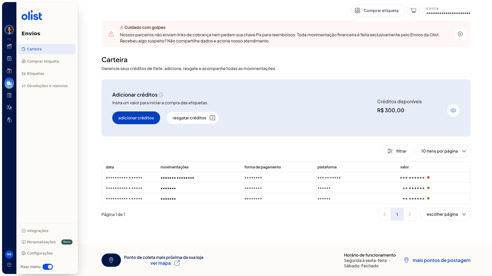
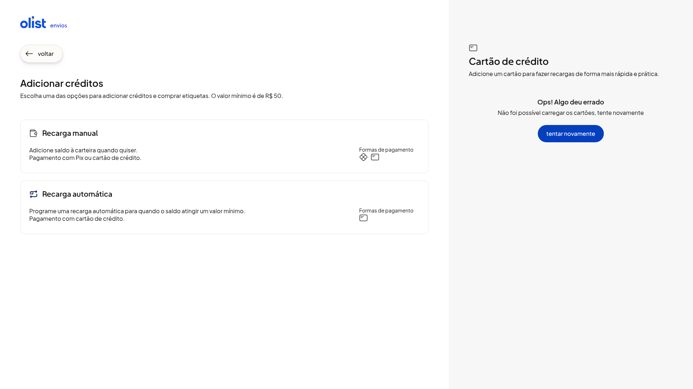

Programar a recarga automática de créditos do Olist Envios
A recarga automática do Envios da Olist adiciona créditos na carteira com cartão de crédito quando o saldo chega ao valor que você definir. Com isso, a carteira pode manter saldo para a compra de etiquetas sem uma recarga manual a cada vez.
A programação é feita na tela Adicionar créditos, aberta pelo botão adicionar créditos na página Envios ou na Carteira do painel do Envios.
Importante
- A recarga automática é feita com cartão de crédito, já salvo ou cadastrado na hora.
- Os dois campos de valor são obrigatórios e recebem valor em reais.
Instruções
-
Na barra lateral de produtos > Envios, clique em Envios.

-
Clique em adicionar créditos. Para abrir a mesma tela pelo painel, clique em ir para plataforma Envios. Se aparecer a tela de boas-vindas, clique em começar. Na Carteira, clique em adicionar créditos. O caminho menu lateral esquerdo > Carteira também abre essa tela.

-
Escolha Recarga automática. A opção faz a recarga com cartão quando o saldo atinge o mínimo configurado.

-
Preencha Quando o saldo estiver abaixo de. A recarga automática ocorre quando o saldo chega a esse valor.
-
Preencha Recarregar o valor de. Esse é o valor em reais adicionado a cada recarga automática.
-
Selecione um cartão já salvo. Se não houver cartão utilizável, clique em adicionar cartão.
Cadastrar cartão
No painel Cadastrar cartão, preencha:
- Número do cartão: obrigatório
- Nome do titular: obrigatório
- Data de vencimento: obrigatório, mês e ano
- Código de segurança: obrigatório
- Documento do titular: obrigatório
- CEP do titular: obrigatório
- Apelido: opcional
Clique em adicionar cartão. Para sair sem salvar o cartão, clique em cancelar.
- Clique em continuar.
Informações adicionais
Com saldo, as etiquetas podem ser compradas depois da expedição
Com saldo na carteira, as etiquetas podem ser compradas automaticamente depois de cada expedição no ERP.